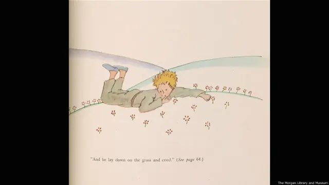

Después de visitar varios planetas habitados por personas mayores muy extrañas, el Principito llegó a la Tierra. Caminando por mucho tiempo, encontró un jardín lleno de rosas en flor.
Al verlas, sintió una profunda tristeza. Su rosa le había dicho que era la única de su especie en todo el universo, y ahí había cinco mil iguales en un solo jardín.
Pensó que no era un gran príncipe: solo tenía una rosa común y tres volcanes pequeños, uno de ellos apagado para siempre. Entonces se acostó sobre la hierba y lloró.
Poco después, un zorro le enseñaría el secreto más importante:
Fin.
← Página anterior | Volver al inicio
Página 3 de 3